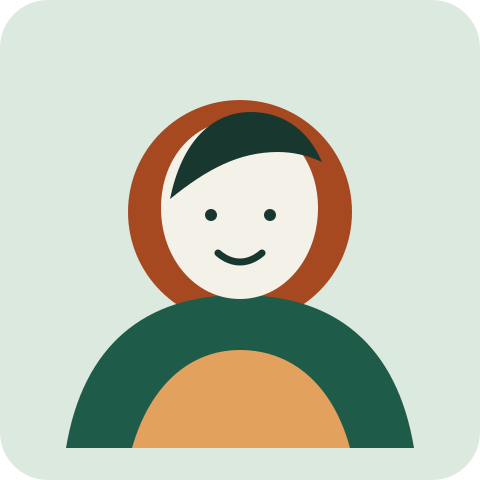

Doğrulanmış ders projesi
Python ile haber başlıklarını toplumsal sorun kategorilerine göre kaydeden ve sayım raporu çıkaran bir komut satırı uygulaması.
Proje kartına gitSosyoloji · Dijital okuryazarlık
Sosyoloji öğrencisi. Bu portfolyo, toplumsal sorunları incelemek için geliştirilmiş bir ders projesini ve yeni dijital denemeleri bir araya getiriyor.

Portfolyo odağı
Çalışmalar; bilgiyi düzenleme, anlaşılır biçimde sunma ve dijital araçların sınırlarını gözetme ekseninde sergileniyor.
Python ile haber başlıklarını toplumsal sorun kategorilerine göre kaydeden ve sayım raporu çıkaran bir komut satırı uygulaması.
Proje kartına gitBu portfolyo için oluşturulmuş üç küçük web denemesi. Her biri yeni demo olarak açıkça etiketlenmiştir.
Demoları gör